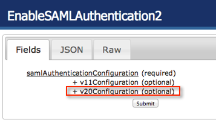
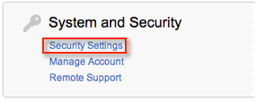
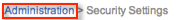

Note the Company Name on the General tab in Okta for the Replicon app.
Select v20Configuration, as shown below.

Enter the following ssoHTTPPostUrl, as shown below.
Sign into the Okta Admin dashboard to generate this value.Download the following certificate.
Sign into the Okta Admin dashboard to generate this value.On the top menu, select Administration, as shown below.
In the administration screen, select Security Settings, in the System and Security section, as shown below.

Copy the following URL into the SAML Transfer URL field and add ?target={0} to the text, as shown above.
Sign into the Okta Admin dashboard to generate this value.For example, if the URL shown above is https://test.test.com/app/replicontest/kvz2czkhEYVIIMJCVLNA/sso/saml, enter https://test.test.com/app/replicontest/kvz2czkhEYVIIMJCVLNA/sso/saml?target={0} into the SAML Transfer URL field.
Enter the following URL into the URL to go to after Logout field, as shown above.
Sign into the Okta Admin dashboard to generate this value.Select Administration in the breadcrumb link, as shown below.
